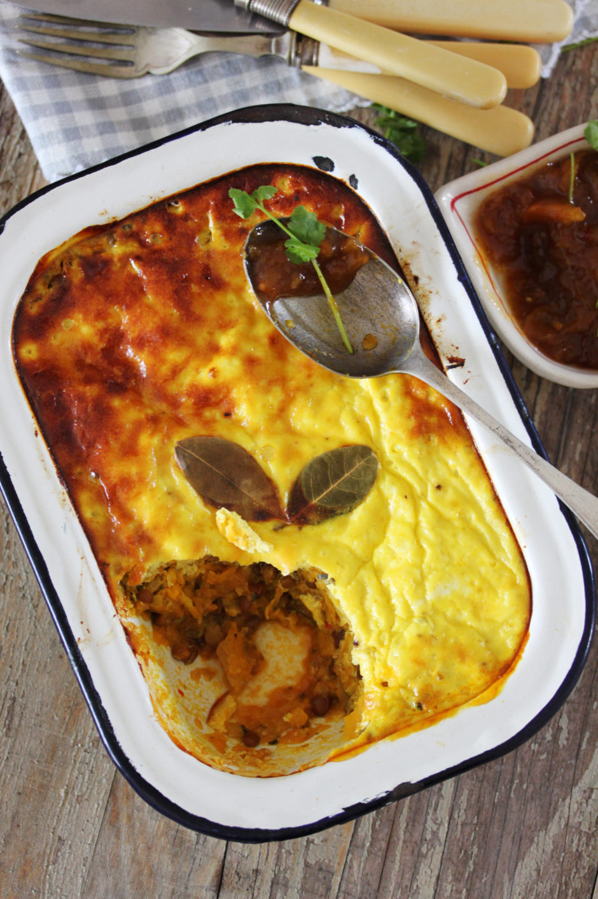

Vegan Bobotie

This melt-in-mouth bobotie is the perfect recipe to satisfy your cravings.
Here's a list of the ingredients needed for this divine dish.
Ingredients
- 1 slice bread crust removed (whole wheat works just fine)
- 1 TBSP olive oil
- 2 cups dried brown lentils soaked overnight and rinsed
- 2 onions finely diced
- 3 cloves garlic pressed
Next, here are the steps needed to make our vegan bobotie
- Preheat the oven to 190ºC.
- Soak the bread in water for 10 minutes, then squeeze dry.
- In a saute or frying pan, heat the olive oil on medium-high heat. Fry the onion with a pinch of salt until translucent and slightly browned. Then, add the garlic, carrots, herbs and spices and continue to fry while regularly stirring for a few more minutes.
- Add the remaining ingredients, stir, and bring the mixture to a boil. Then, lower the heat and allow to simmer for 15-20 minutes or until the lentils are soft and all the water has been absorbed.
- Transfer the lentil mixture to ovenproof meal prep containers and smooth over the top. Poke a few holes into the mixture with a fork, so that the topping can seep through.